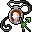

反射の護符 Amulet of reflection
英語版 CrawlWiki の記事「Amulet of reflection」(0.30 向け、2026-02-07 版)の翻訳です。原文の著者は編集履歴をご覧ください。
この記事は 0.30 の時点の内容で、最新の 0.34 とは違うところがあるかもしれません。
| 種類 | 装身具 |
|---|---|
| 名前 | 反射の護符 |
| アイコン |  |

| 力場を放って飛んでくる攻撃の一部を防ぐ護符だ。防いだ遠隔攻撃を攻撃者へ跳ね返すことさえある。 |
反射の護符を身につけると、SH が 5 増え、反射のエゴを得る。飛び道具(射撃武器や、石錐の矢のような一部の呪文)を防ぐと、それは必ず攻撃者へ跳ね返される。
戦略
この護符の SH +5 は、守りをかなり固めてくれる。ほかの護符と違って、この SH は常に一定だ。軽業のように切れることもなければ、守護霊のように MP を消費することもない。だからほぼどんなキャラクターにとっても有力な選択肢になる。とはいえ、キャラクターによってはほかの護符の性質のほうが欲しいこともあるだろう。
飛び道具を跳ね返す力も、セントールやヤクトールのような遠距離攻撃をしてくる敵には特に役立つ。ただ、SH が上がることに比べればおまけ程度の利点だ。なお、(盾などで)SH の高いプレイヤーほど防ぐ回数が増えるので、そのぶん跳ね返す回数も増える。
関連項目
- 防護のブローチ - SH がもっと上がる固定アーティファクトの護符。ただし反射ではなく守護霊がつく。
変更履歴
- 0.26 より前は、この護符が働くには、HP が満タンの状態で着用者になじむ必要があった。
- 0.25 より前は、反射の護符で得られる SH は 2〜6 で、HP 満タンでなじませる必要もなかった。
- 反射の護符は 0.18 で追加された。
| 装身具 | |
|---|---|
| 護符 | 軽業師 • 化学 • 散逸 • 信仰 • 守護霊 • 魔力再生 • 反射 • 再生 • 野生化 |
| 指輪 | 器用さ • 躱し身 • 飛行 • 知性 • 魔力 • 耐毒 • 生命力保護 • 護り • 耐冷 • 耐火 • 腐食阻止 • 霊視 • 殺戮 • 腕力 • 意志力 • 魔術 |